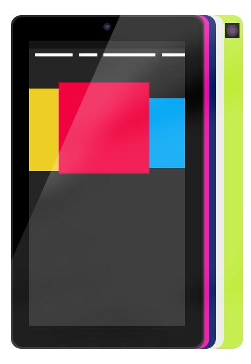

The Autopsy Report · Device #075
The Kindle Fire HD 7" (2012)
Amazon's answer to the Nexus 7: a $199 tablet with a TI OMAP heart, stereo speakers, and a fork of Android called Fire OS.
What is this thing?
The Kindle Fire HD 7-inch (2012) is Amazon's second-generation tablet, announced September 6, 2012 and released September 14, 2012, starting at $199. Wikipedia It kept the original Fire's price, added an HD display and stereo speakers, and ran Amazon's Android fork, Fire OS.
The surprise inside, per EE Times' teardown analysis: a TI OMAP4460 processor — not the newer OMAP4470 some expected — paired with a Samsung eMMC and RAM that varies between teardown units. EE Times
Not yet on our bench
This device is not on our bench. We don't own one, we haven't opened one, and we haven't powered one on. Everything on this page comes from public records: government filings, published teardowns by repair shops and journalists, and manufacturer documents. That's a legitimate way to learn a device's story — and it's also a limited one. There are no BareBoard photos, measurements, boot logs, or firmware notes here, because we haven't earned them yet.
When a unit of the Kindle Fire HD 7 does reach our bench, this page gets a second edition: our own board photography, our own measurements, and whatever the device tells us when it wakes up. Until then, what follows is the public record, carefully sourced, with the gaps labeled as gaps.
A short history
- September 6, 2012Amazon announces the Kindle Fire HD in 7-inch and 8.9-inch sizes. Wikipedia
- September 2012The 7-inch model clears the FCC under ID YJM-0725, filed under the name Harpers LLC. The Digital Reader
- September 14, 2012The 7-inch Fire HD goes on sale at $199. Wikipedia
- September 17, 2012Teardowns land within days: iFixit, Engadget, TechRepublic, and EE Times all open one up. iFixit news · Engadget · EE Times
- September 2012Engadget's teardown notes it “proves an easy fix” — a repairable design for a budget tablet. Engadget
The outside
A 7-inch, 1280×800 IPS display with stereo speakers and Dolby audio tuning — Amazon pitched it as the media tablet, and the dual speakers were the tell. Wikipedia The back is matte plastic with the embossed “kindle” logo.
No freely licensed photograph of this exact model exists on Wikimedia Commons, so the image below is a community illustration of the Fire HD 7 rather than a photo — flagged honestly in the caption.

The board
Teardowns describe a single main board with the OMAP4460 at its center, Samsung eMMC storage, and a Wolfson audio codec feeding the stereo speakers. EE Times TechRepublic's photo tour walks the board screw by screw. TechRepublic
One honest complication: teardowns found different RAM chips in different units — Elpida in some, Samsung in others — so any chip list for this device is a snapshot of one unit, not a universal bill of materials. EE Times We have not photographed the board ourselves.
Under the microscope: the chips
What's on the board, what each part does, and how sure we are — all from public teardown records, since we haven't seen the board ourselves. Likely means the public hardware record agrees on it. Confirmed is reserved for primary sources we could verify directly, like the government's own filing. Every row links somewhere you can read more.
| Chip | What it does | How we know | Dig deeper |
|---|---|---|---|
| TI OMAP4460 | The main processor — dual-core ARM Cortex-A9. Note: the 4470, not the 4460. | Likely EE Times’ teardown analysis names the 4460 specifically. | EE Times |
| Elpida B8164B3PF or Samsung K3PE7E700M 1 GB RAM — vendor varies by unit |
Working memory; teardowns found both vendors. | Likely Both markings documented across teardown units. | EE Times |
| Samsung KLMAG2GE4A 16 GB eMMC |
Flash storage. | Likely Read off the board by teardown press. | iFixit news |
| TI TWL6032 | Power-management companion to the OMAP. | Likely Identified in teardown chip lists. | EE Times |
| Broadcom BCM2076 | Bluetooth radio. | Likely Identified in teardown chip lists. | TechRepublic |
| Wolfson WM8962E | Audio codec behind the stereo speakers. | Likely Identified in teardown chip lists. | EE Times |
| InvenSense MPU-6050 | Accelerometer plus gyroscope. | Likely Identified in teardown chip lists. | iFixit news |
| Atmel mXT768E | Touchscreen controller. | Likely Identified in teardown chip lists. | EE Times |
| LG LD070WX3-SL01 | The 7-inch 1280×800 display panel. | Likely Panel marking read in teardowns. | TechRepublic |
Not in the public chip lists: the exact Wi-Fi front end and the display driver. And remember the RAM caveat above — Amazon dual-sourced memory on this model, so two Fire HDs can differ under the hood.
The government's file on this device
The 7-inch Fire HD went through the FCC as YJM-0725, filed under the applicant name Harpers LLC — Amazon's longstanding habit of filing hardware under shell-company names. The Digital Reader Likely — the FCC's own index page refused our connection during research, so the filing details here come from contemporary reporting rather than the primary source.
We report no grant dates or transmit powers for this filing rather than guess at them. The direct filing page is worth a visit if your network cooperates: filing page.
Debug and service modes
We found no manufacturer-published debug or service-mode documentation for this model in the public records we could reach — the filing index itself was unreachable during research, so even the user manual's public status is unverified. We list no modes here rather than describe ones we can't source.
We have not entered any service mode on any Fire HD.
Our posture on all of the above: we describe what's publicly documented, and we don't go knocking. No device has been probed, reflashed, or opened on our bench — there is nothing here but reading.
What public records show
The 4460, not the 4470. EE Times' teardown analysis specifically notes Amazon shipped the OMAP4460 rather than the newer 4470 — a cost decision invisible from the outside, visible the moment the shields come off. EE Times
Dual-sourced RAM is normal, not a defect. Finding Elpida memory in one unit and Samsung in another is standard supply-chain practice — but it means any single teardown is one sample, and honest reporting says so. EE Times
What we haven't done
- We have not opened a 2012 Fire HD, photographed its board, or measured anything on it.
- We have not captured a boot log or entered recovery mode on this model.
- We have not verified which RAM vendor a given unit carries — teardowns found both Elpida and Samsung.
By the numbers
- Model: Kindle Fire HD 7-inch (2012) Wikipedia
- FCC ID: YJM-0725 (filed as Harpers LLC) The Digital Reader
- Main chip: TI OMAP4460 (dual-core Cortex-A9) EE Times
- Memory: 1 GB RAM (Elpida or Samsung, by unit) EE Times
- Display: 7 in, 1280×800 IPS (LG panel) Wikipedia TechRepublic
- Storage: 16/32 GB Wikipedia
- Released: September 14, 2012, from $199 Wikipedia
- Wireless: Wi-Fi b/g/n, Bluetooth Wikipedia
Words to know
Every term this page uses, in plain English. No prior knowledge required.
- eMMC
- Embedded MultiMediaCard: flash storage plus its controller in one package — the standard storage chip in tablets of this era.
- Fire OS
- Amazon's fork of Android: no Google apps, Amazon's store and services front and center.
- PMIC
- Power-management IC: the chip that makes all the different voltages the board needs from the battery.
- Touchscreen controller
- The chip that turns finger touches on the glass into coordinates the processor understands.
- FCC ID
- The ID the FCC assigns to each approved wireless product. Punch it into fccid.io and the whole public filing comes up.
- Shell company filing
- Amazon's practice of filing FCC hardware under names like Harpers LLC instead of “Amazon” — the grantee history still tells the story.
Sources & confidence
- Chip identities: EE Times' teardown analysis, iFixit's teardown news, TechRepublic's photo tour, and Engadget's teardown — all September 2012. Marked Likely throughout — we haven't seen the board ourselves.
- FCC ID and applicant name: contemporary reporting on the filing, since the FCC index page was unreachable during research. Treated as Likely, not Confirmed.
- Release date, price, and display specs: the device's encyclopedia entry, cross-checked against launch coverage.
- Anything not listed here is unknown until the bench says otherwise. We'll say so, out loud, when that's the case.
Legal note. BareBoard is an educational project. Everything on this page is assembled from public records and freely-licensed photography credited in its caption. We don’t publish, host, or distribute firmware, keys, passwords, or credentials. Product names and trademarks belong to their respective owners and appear here only to identify the hardware. If you believe anything here infringes your rights, contact us and we’ll address it promptly.